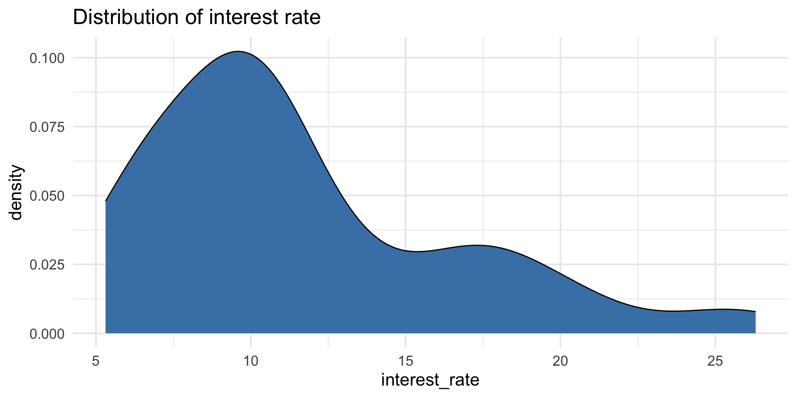
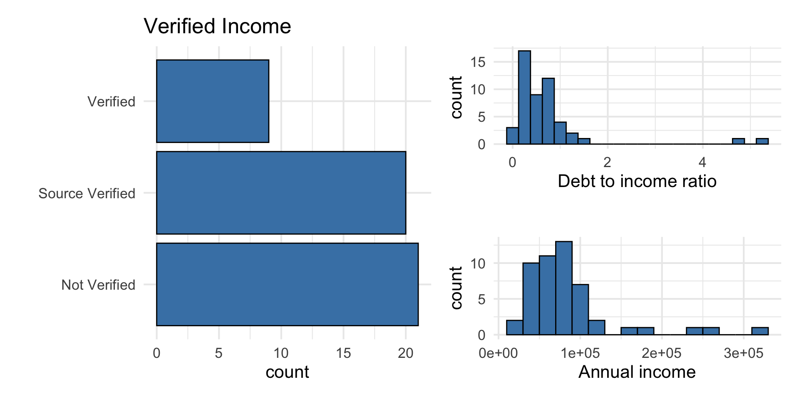
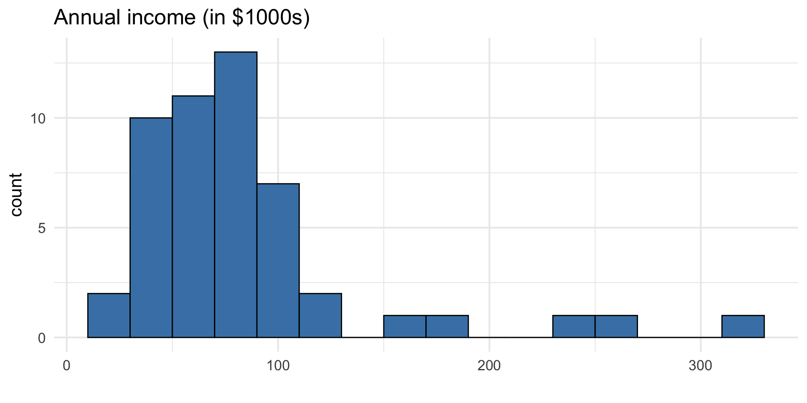
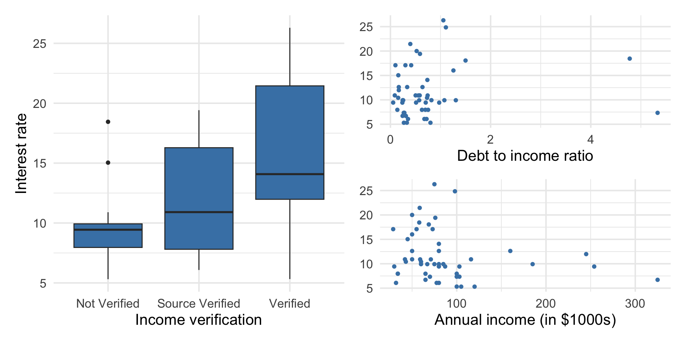

Multiple linear regression (MLR)
Jan 23, 2025
Topics
Introducing multiple linear regression
Exploratory data analysis for multiple linear regression
Fitting the least squares line
Interpreting coefficients for quantitative predictors
Prediction
Computing setup
Data: Peer-to-peer lender
Today’s data is a sample of 50 loans made through a peer-to-peer lending club. The data is in the loan50 data frame in the openintro R package.
# A tibble: 50 × 4
annual_income debt_to_income verified_income interest_rate
<dbl> <dbl> <fct> <dbl>
1 59000 0.558 Not Verified 10.9
2 60000 1.31 Not Verified 9.92
3 75000 1.06 Verified 26.3
4 75000 0.574 Not Verified 9.92
5 254000 0.238 Not Verified 9.43
6 67000 1.08 Source Verified 9.92
7 28800 0.0997 Source Verified 17.1
8 80000 0.351 Not Verified 6.08
9 34000 0.698 Not Verified 7.97
10 80000 0.167 Source Verified 12.6
# ℹ 40 more rowsVariables
Predictors:
annual_income: Annual incomedebt_to_income: Debt-to-income ratio, i.e. the percentage of a borrower’s total debt divided by their total incomeverified_income: Whether borrower’s income source and amount have been verified (Not Verified,Source Verified,Verified)
Outcome: interest_rate: Interest rate for the loan
Outcome: interest_rate
| Min | Median | Max | IQR |
|---|---|---|---|
| 5.31 | 9.93 | 26.3 | 5.755 |
Predictors
Data manipulation 1: Rescale income
Why did we rescale income?
Outcome vs. predictors
Goal: Use these predictors in a single model to understand variability in interest rate.
Why do we want to use a single model versus 3 separate simple linear regression models?
Multiple linear regression (MLR)
Multiple linear regression (MLR)
Based on the analysis goals, we will use a multiple linear regression model of the following form
\[ \begin{aligned}\text{interest_rate} ~ = \beta_0 & + \beta_1 ~ \text{debt_to_income} \\ & + \beta_2 ~ \text{verified_income} \\ &+ \beta_3~ \text{annual_income_th} \\ & +\epsilon, \quad \epsilon \sim N(0, \sigma^2_{\epsilon}) \end{aligned} \]
Multiple linear regression
Recall: The simple linear regression model
\[ Y = \beta_0 + \beta_1~ X + \epsilon \]
The form of the multiple linear regression model is
\[ Y = \beta_0 + \beta_1X_1 + \dots + \beta_pX_p + \epsilon \]
Therefore,
\[ E(Y|X_1, \ldots, X_p) = \beta_0 + \beta_1X_1 + \dots + \beta_pX_p \]
Fitting the least squares line
Similar to simple linear regression, we want to find estimates for \(\beta_0, \beta_1, \ldots, \beta_p\) that minimize
\[ \sum_{i=1}^{n}\epsilon_i^2 = \sum_{i=1}^n[y_i - \hat{y}_i]^2 = \sum_{i=1}^n[y_i - (\beta_0 + \beta_1x_{i1} + \dots + \beta_px_{ip})]^2 \]
The calculations can be very tedious, especially if \(p\) is large
Matrix form of multiple linear regression
Suppose we have \(n\) observations, a quantitative response variable, and \(p\) > 1 predictors \[ \underbrace{ \begin{bmatrix} y_1 \\ \vdots \\ y_n \end{bmatrix} }_ {\mathbf{y}} \hspace{3mm} = \hspace{3mm} \underbrace{ \begin{bmatrix} 1 &x_{11} & \dots & x_{1p}\\ \vdots & \vdots &\ddots & \vdots \\ 1 & x_{n1} & \dots &x_{np} \end{bmatrix} }_{\mathbf{X}} \hspace{2mm} \underbrace{ \begin{bmatrix} \beta_0 \\ \beta_1 \\ \vdots \\ \beta_p \end{bmatrix} }_{\boldsymbol{\beta}} \hspace{3mm} + \hspace{3mm} \underbrace{ \begin{bmatrix} \epsilon_1 \\ \vdots\\ \epsilon_n \end{bmatrix} }_\boldsymbol{\epsilon} \]
What are the dimensions of \(\mathbf{y}\), \(\mathbf{X}\), \(\boldsymbol{\beta}\), \(\boldsymbol{\epsilon}\)?
Matrix form of multiple linear regression
As with simple linear regression, we have
\[ \mathbf{Y} = \mathbf{X}\boldsymbol{\beta} + \boldsymbol{\epsilon} \]
Generalizing the derivations from SLR to \(p > 2\), we have
\[ \hat{\boldsymbol{\beta}} = (\mathbf{X}^T\mathbf{X})^{-1}\mathbf{X}^T\mathbf{y} \]
as before.
Model fit in R
int_fit <- lm(interest_rate ~ debt_to_income + verified_income + annual_income_th,
data = loan50)
tidy(int_fit) |>
kable(digits = 3)| term | estimate | std.error | statistic | p.value |
|---|---|---|---|---|
| (Intercept) | 10.726 | 1.507 | 7.116 | 0.000 |
| debt_to_income | 0.671 | 0.676 | 0.993 | 0.326 |
| verified_incomeSource Verified | 2.211 | 1.399 | 1.581 | 0.121 |
| verified_incomeVerified | 6.880 | 1.801 | 3.820 | 0.000 |
| annual_income_th | -0.021 | 0.011 | -1.804 | 0.078 |
Model equation
\[ \begin{align}\hat{\text{interest_rate}} = 10.726 &+0.671 \times \text{debt_to_income}\\ &+ 2.211 \times \text{source_verified}\\ &+ 6.880 \times \text{verified}\\ & -0.021 \times \text{annual_income_th} \end{align} \]
Note
We will talk about why there are only two terms in the model for verified_income soon!
Interpreting \(\hat{\beta}_j\)
- The estimated coefficient \(\hat{\beta}_j\) is the expected change in the mean of \(Y\) when \(X_j\) increases by one unit, holding the values of all other predictor variables constant.
- Example: The estimated coefficient for
debt_to_incomeis 0.671. This means for each point in an borrower’s debt to income ratio, the interest rate on the loan is expected to be greater by 0.671%, on average, holding annual income and income verification constant.
Interpreting \(\hat{\beta}_j\)
The estimated coefficient for annual_income_th is -0.021. Interpret this coefficient in the context of the data.
Why do we need to include a statement about holding all other predictors constant?
Interpreting \(\hat{\beta}_0\)
| term | estimate | std.error | statistic | p.value | conf.low | conf.high |
|---|---|---|---|---|---|---|
| (Intercept) | 10.726 | 1.507 | 7.116 | 0.000 | 7.690 | 13.762 |
| debt_to_income | 0.671 | 0.676 | 0.993 | 0.326 | -0.690 | 2.033 |
| verified_incomeSource Verified | 2.211 | 1.399 | 1.581 | 0.121 | -0.606 | 5.028 |
| verified_incomeVerified | 6.880 | 1.801 | 3.820 | 0.000 | 3.253 | 10.508 |
| annual_income_th | -0.021 | 0.011 | -1.804 | 0.078 | -0.043 | 0.002 |
Describe the subset of borrowers who are expected to get an interest rate of 10.726% based on our model. Is this interpretation meaningful? Why or why not?
Prediction
What is the predicted interest rate for an borrower with an debt-to-income ratio of 0.558, whose income is not verified, and who has an annual income of $59,000?
The predicted interest rate for an borrower with with an debt-to-income ratio of 0.558, whose income is not verified, and who has an annual income of $59,000 is 9.86%.
Prediction in R
Just like with simple linear regression, we can use the predict() function in R to calculate the appropriate intervals for our predicted values:
new_borrower <- tibble(
debt_to_income = 0.558,
verified_income = "Not Verified",
annual_income_th = 59
)
predict(int_fit, new_borrower) 1
9.890888 Note
Difference in predicted value due to rounding the coefficients on the previous slide.
Cautions
- Do not extrapolate! Because there are multiple predictor variables, there is the potential to extrapolate in many directions
- The multiple regression model only shows association, not causality
- To show causality, you must have a carefully designed experiment or carefully account for confounding variables in an observational study
Recap
Showed exploratory data analysis for multiple linear regression
Used least squares to fit the regression line
Interpreted the coefficients for quantitative predictors
Predicted the response for new observations